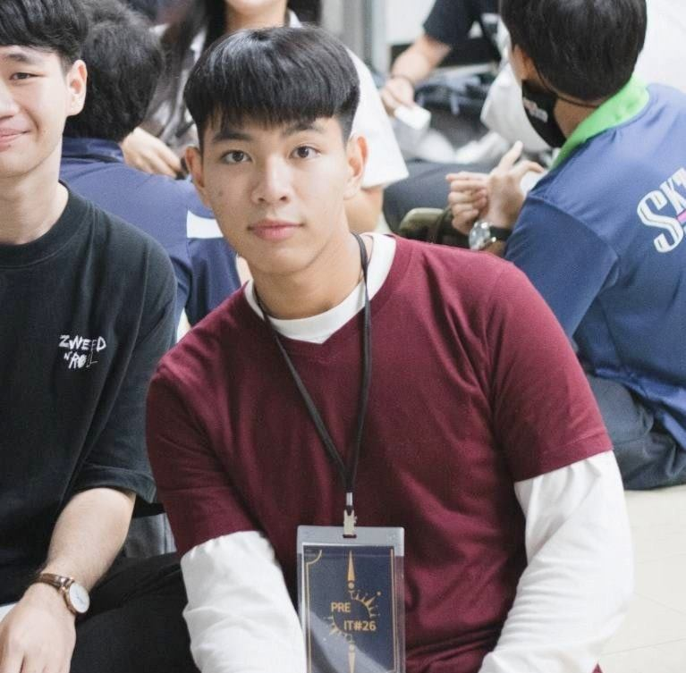

ชื่อ-สกุล: นายกรัณย์ภัทร พรหมวิสุทธิ์
ชื่อเล่น: โจม
เบอร์โทรศัพท์: 095-469-8230
Email: jomcootle@gmail.com
วัน/เดือน/ปี เกิด: 5 มกราคม 2545
ที่อยู่: 100/158 หมู่ 6 หมู่บ้านเดอะคัลเลอร์เฟส 2 ต.ลาดสวาย อ.ลำลูกกา จ.ปทุมธานี 12150
กำลังศึกษาที่: มหาวิทยาลัยเทคโนโลยีพระจอมเกล้าธนบุรี คณะเทคโนโลยีสารสนเทศ สาขาเทคโนโลยีสารสนเทศ
วิชาที่ชอบ: โปรแกรมมิ่ง, ประวัติศาสตร์, ดาราศาสตร์
กิจวัตรประจำวัน: อ่านหนังสือ, ฝึกเขียนโปรแกรม, อ่านนิตยสารและสารคดี
อาหารที่ชอบ: สเต็ก, แซลมอน
คติประจำใจ: ล้มแล้วอย่าลืมลุก
